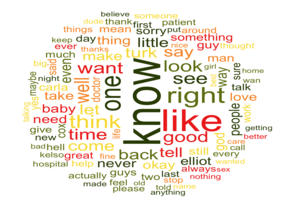
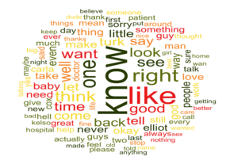

Processamento Eletrônico de Linguagens Naturais
 
❮
❯

❮
❯
O processamento de linguagem natural, ou PLN (ou, ainda, NLP, do inglês Natural Language Processing), é o campo da pesquisa computacional que estuda como poderíamos fazer com que uma máquina consiga entender a linguagem dos humanos, especificamente, a linguagem escrita. Ou seja, o objetivo da PLN é explorar a habilidade dos sistemas computacionais em entender textos.
Por que escolher Python?
Python tem um atributo único entre outras linguagens de programação: é fácil de usar quando se trata de computação quantitativa e analítica. É a linguagem líder do setor há algum tempo e está sendo amplamente utilizada em vários campos, como petróleo e gás, processamento de sinal, finanças e outros. Python é considerada uma linguagem para iniciantes e qualquer aluno ou pesquisador com conhecimento básico pode começar a trabalhar com ela. O tempo gasto em códigos de depuração e em várias restrições de engenharia de software também é minimizado. Python fornece um banco de dados massivo de bibliotecas para inteligência artificial e aprendizado de máquina. Algumas das bibliotecas mais populares incluem Scikit Learn, TensorFlow, Seaborn, Pytorch, Matplotlib, Pandas e muito mais. Mas será que poderíamos implementar uma aplicação de processamento de linguagem natural usando Python? Sim! No universo pytonico, o módulo (ou library) mais conhecido e amplamente utilizado é o NLTK (Natural Language Toolkit).
A biblioteca NLTK
O Natural Language Toolkit, ou mais comumente o NLTK, é um conjunto de bibliotecas e programas para processamento simbólico e estatístico da linguagem natural para inglês, escrito na linguagem de programação Python. Para começar, é necessário que você tenha uma versão recente do Python e o pip instalados no seu computador. Com esses requerimentos satisfeitos, podemos instalar o NLTK, digitando no terminal:
>>>pip install nltk
Completada a instalação, podemos importar o NLTK, dentro do Python:
>>>import nltk
Como este é um módulo que demanda muita informação de referência para poder funcionar, precisamos fazer download de alguns pacotes de informação para podermos conduzir as nossas análises. Imagine uma ferramenta que precisa ser capaz de processar textos em português, que possui um léxico de 381.000 palavras e, também, textos em inglês, com um léxico de 171.476! Por isso, usamos nltk.download para pegarmos as informações que precisamos. Para o exemplo que implementaremos aqui, utilizaremos as “stopwords”, que são palavras que usamos para construir frases, mas que não carregam a informação primária que está sendo transmitida. Por exemplo, considere a frase “Eu gosto de chocolate com amendoim”. Para uma empresa que vende chocolates, certamente o que importa é que na minha frase apareceram as palavras “chocolate” e “amendoim” (e sem nenhuma negação!). As palavras “Eu”, “de”, “com” poderiam ser retiradas sem prejudicar uma análise de PLN. Sendo assim, vamos fazer o dowload das nossas stopwords:
>>>nltk.download('stopwords')>>>stopwords = nltk.corpus.stopwords.words('portuguese')>>>palavras_tokenize = tokenize.word_tokenize(text, language='portuguese')
Com o código acima, tokenizamos o texto armazenado na variável text. Ou seja, separamos todas suas palavras para que possamos analisá-las sintaxicamente e semânticamente. Com esta poderosa ferramenta é possível realizar milhares de operações em cima dos textos. Para mais detalhes, acesse a documentação disponível aqui.